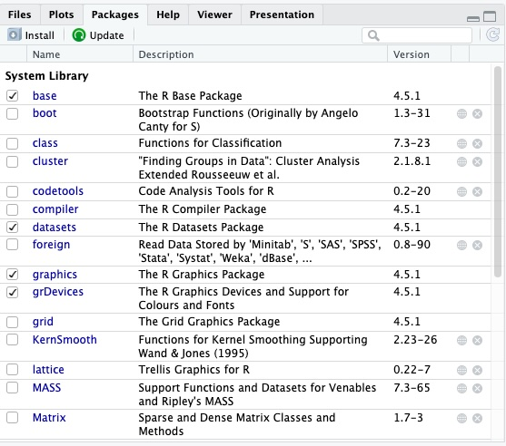

Basic Syntax & Concepts
Before we start working with our world values survey dataset,let's go over some of the basic concepts and syntax in R.
One important thing to note is that all data structures in R are referred to as 'objects.' This means that data frames, vectors, and variables are all different kinds of objects in R.
Operators
Operators are special symbols or keywords used to perform operations on one or more values. Common operators include:
- Assignment operators. We can use the operators
<-and=to assign a value to a variable/object. When naming an object in R, avoid using the names of fundamental objects (like 'mean), periods, or numbers at the beginning. Try creating variables for the day and month and assigning them values by running the following in the Source Editor:
Note
RStudio allows for several quick keyboard shortcuts. One useful shortcut is Alt+- (on PC) or Option+- (on mac) to write the assignment operator <-.
- Arithmetic operators. The operators
+,-,*, and/are used for basic mathematical calculations, namely addition, subtraction, multiplication, and division. Try running the following in your Source Editor and watching what appears in the console:
- Comparison operators. The operators
<,>,!=and==return a logical value when used to compare two things. In R, you can use!to represent a negative (so,!=means not equal to). Notice also that you must use a double equals sign (a single equals sign is an assignment operator, as we covered above). Try running the following:
- Logical operators. The operators
&(and),|(or), and!(not) are used to perform logical operators. These are a bit more complicated to use, but here is a simple example: - Other miscellaneous operators:
- The hash sign
#indicates a comment in the code - The colon sign
:creates a sequence of numbers - The square brackets
[]indexed an object, such as a vector - The dollar sign
$accesses a variable from a dataframe - The percent sign
%is used for some special operators to string operations together - The double colon
::accesses functions or variables from a specific package
- The hash sign
Data types
The most common data types in R are:
- Numeric data (numbers with decimal points, either integers or floats)
- Character data (text strings)
- Factor data (categorial data with a fixed set of values or levels)
- Logical data (boolean values or logical values)
Data types are important because they determine how data is stored, processed, and analyzed. Choosing the appropriate data type can help you optimize your memory usage, perform the necessary data manipulations, conduct the appropriate statistical analyses, and create effective visualizations of your data.
Data frames
Data frames are a very common type of data structure used in R. A data frame is a two-dimensional tabular structure representing a grid of data, where each row represents an observation and each column represents a variable.
Vectors
Vectors are another important type of data structure in R. A vector is a basic, one-dimensional data structure that represents a sequence of values of the same data type, whether numbers or letters.
Creating vectors is straightforward: you just use the assignment operator and the c() function, which combines values. Try running the following code to make some vectors describing the Hollywood Chris's:
Now that you've created these two vectors, you should see them in your environment in the top right pane of the RStudio console.Note
Be sure to include quotation marks around the text data you're combining into a vector. If you do not have quotation marks, R will assume that you are referring to objects, not data values.
You can call functions on vectors. For example, you can inspect the length, structure, and type of vectors. Run these three functions. Your output will appear in the console - did you get what you expected to see?
Output
It is also fairly straightforward to add elements to the beggining or end of your vector. Run the following code in your source editor or console:
Once you've done this, you should see the values of chris_vector change in the environment pane.Importantly, if you try to put data of different types into one vector, R will coerce them automatically to all be the same type.
Let's try creating a vector including the last name and age for two of the Hollywood Chris's. Basically, we are trying to make a vector with two strings and two integers.
What happens to the data in our vector? Callstr(name_age_vector). How has R changed it?
Solution
R will have coerced the vector into a character vector. This means that all four values, the ages included, will be treated as text.
When different data types are combined within a single atomic vector, R applies a coercion hierarchy to determine the resulting data type of the entire vector. Data are coerced from simplest to richest, followng the order of Logical -> Integer -> Numeric -> Complex -> Character.
For example: If a vector contains both logical and integer values, all logical values will be coerced to integer (e.g., TRUE becomes 1, FALSE becomes 0). Or, if a vector contains numeric and character values, all numeric values will be coerced to character (as happened in our example).
Functions
A function is a 'canned script' that automates a block of code that performs a specifc task and can be easily called and executed by the user. Functions are an essential component of programming in R.
When R is installed, it comes with the default package base which contains a number of useful built-in functions. These include:
mean()calculates the mean of a vector of numberssd()calculates the standard deviation of a vector of numbersstr()displays the structure of an R objecttable()creates a frequency table of a vector or factorplot()creates a basic plot of data
Try calculating the average age of the Hollywood Chris's using some of R's built-in functions. What function will you use? What output do you get?
You can also define your own functions in R using the function function, like so:
Packages
Different packages in R will come with their own built-in functions. Packages are collections of data, functions, and documentation. Packages are how we expand R beyond the base package.
R packages are developed by the user community, and are all available for free. The Packages tab in RStudio lists all packages already installed in your R instance.

For a full list of all published packages, you can check out the R website.
Packages only need to be installed once. Once they're installed, though, you do need to call them before you can use them and their built-in functions. Let's practice installing and calling packages with tidyverse, a very common R package for simple data work.
tidyverse appear in the Packages tab.
Alternatively, you can install a package by clicking the Install button on the top left of the Packages pane. Similarly, you can load a package by checking the box beside the installed package. In both cases, you will see the work that R is doing to install and load the package in the Console.
Missing data
As a progamming language made for analysing datasets, R includes ways of dealing with missing data. Missing data is represented as NA in R. When doing operations on numbers in R, most functions will return NA if there are missing values in your data.
One way to sidestep this problem is to include the argument na.rm=TRUE in your operation. This tells R to calculate the result while ignoring missing values.
To test this out, let's start by adding a missing value to our chris_age_vector and trying to calculate the mean.
Solution
You can also check whether your data has any missing values using is.na(). This command returns a logical value of either TRUE or FALSE depending on whether there are missing values in your object or not.
Saving your work
Saving your work is a crucial piece of the workflow in R. Throughout this workshop, we will be saving our work, including the data frames, plots, and script we create.
You can save your script simply by clicking the save button (the one that looks like a floppy disk) in the tool bar of the Source Editor. From there, it will prompt you to choose a name and location to save your file.
Plots can be saved in two ways. One option is to click the Export button in the tool bar of the Plot tab in the bottom right hand pane of RStudio. Alternatively, you can run code in your script to save your plots. The specific code will vary across packages; to save your plots in ggplot2, which we will cover towards the end of this session, you can run the following code:
Finally, to save data frames, you'll need to write them into the folder where you'd like them saved. We'll practice this later, but the basic code for saving a dataframe is as follows: